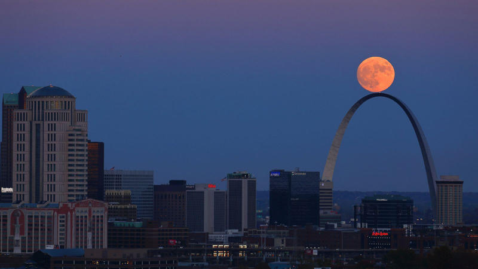

The moon is wonderful! If you love the moon as much as we do, then come hang out with us and we can talk about everything moon-related! Lunaphiles St. Louis is the St. Louis chapter of the Lunaphiles organization, dedicated to all things having to do with the moon. If you searching for a few people to take a look at the moon, then you've come to the right place. We're looney for the moony.
